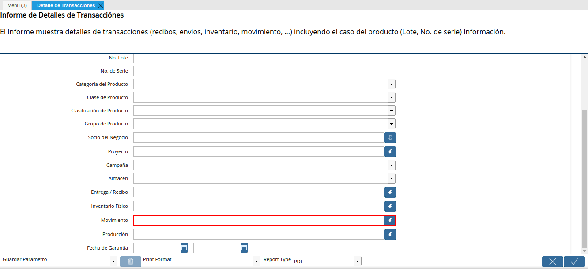

4.9. Detalle de Transacciones¶
Ubique y seleccione en el menú de ADempiere, la carpeta “Gestión de Materiales”, luego seleccione el reporte “Detalle de Transacciones”.
Imagen 1. Menú de ADempiere
Podrá visualizar la ventana del reporte “Detalle de Transacciones”, con diferentes campos que le permiten al usuario filtrar la información en base a lo requerido por el mismo.
Imagen 2. Ventana Detalle de Transacciones
Seleccione en el campo “Tipo de Movimiento”, el movimiento por el cual requiere filtrar la información del reporte.
Imagen 3. Campo Tipo de Movimiento
Seleccione en el campo “Fecha de Movimiento”, la fecha en la cual fue realizado el movimiento y por la cual requiere filtrar la información del reporte.
Imagen 4. Campo Fecha de Movimiento
Seleccione en el campo “Producto”, el producto involucrado en el movimiento por el cual requiere filtrar la información del reporte.
Imagen 5. Campo Producto
Seleccione en el campo “Ubicación”, la ubicación relacionada al movimiento por el cual requiere filtrar la información del reporte.
Imagen 6. Campo Ubicación
Seleccione en el campo “Lote”, el lote involucrado en el movimiento por el cual requiere filtrar la información del reporte.
Imagen 7. Campo Lote
Introduzca en el campo “No. Lote”, el número de lote involucrado en el movimiento por el cual requiere filtrar la información del reporte.
Imagen 8. Campo No. Lote

Introduzca en el campo “No. de Serie”, el número de serie involucrado en el movimiento por el cual requiere filtrar la información del reporte.
Imagen 9. Campo No. de Serie
Seleccione en el campo “Categoría del Producto”, la categoría del producto involucrada en el movimiento por el cual requiere filtrar la información del reporte.
Imagen 10. Campo Categoría del Producto
Seleccione en el campo “Clase de Producto”, la clase del producto involucrada en el movimiento por el cual requiere filtrar la información del reporte.
Imagen 11. Campo Clase de Producto
Seleccione en el campo “Clasificación de Producto”, la clasificación del producto involucrada en el movimiento por el cual requiere filtrar la información del reporte.
Imagen 12. Campo Clasificación de Producto
Seleccione en el campo “Grupo de Producto”, el grupo de producto involucrado en el movimiento por el cual requiere filtrar la información del reporte.
Imagen 13. Campo Grupo de Producto
Seleccione en el campo “Socio del Negocio”, el socio del negocio involucrado en el movimiento por el cual requiere filtrar la información del reporte.
Imagen 14. Campo Socio del Negocio

Seleccione en el campo “Proyecto”, el proyecto involucrado en el movimiento por el cual requiere filtrar la información del reporte.
Imagen 15. Campo Proyecto
Seleccione en el campo “Campaña”, la campaña involucrada en el movimiento por la cual requiere filtrar la información del reporte.
Imagen 16. Campo Campaña
Seleccione en el campo “Almacén”, el almacén involucrado en el movimiento por el cual requiere filtrar la información del reporte.
Imagen 17. Campo Almacén
Seleccione en el campo “Entrega/Recibo”, el documento de entrega/recibo involucrado en el movimiento por el cual requiere filtrar la información del reporte.
Imagen 18. Campo Entrega/Recibo
Seleccione en el campo “Inventario Físico”, el inventario físico involucrado en el movimiento por el cual requiere filtrar la información del reporte.
Imagen 19. Campo Inventario Físico
Seleccione en el campo “Movimiento”, el movimiento de inventario por el cual requiere filtrar la información del reporte.

Imagen 20. Campo Movimiento de Inventario
Seleccione en el campo “Producción”, la producción por la cual requiere filtrar la información del reporte.
Imagen 21. Campo Producción
Seleccione en el campo “Fecha de Garantía”, la fecha de garantía por la cual requiere filtrar la información del reporte.
Imagen 22. Campo Fecha de Garantía

Seleccione la opción “OK”, para generar el reporte en base a los valores seleccionados en los campos indicados anteriormente.
Imagen 23. Opción OK
Finalmente, podrá visualizar el reporte de la siguiente manera.
Imagen 24. Reporte Detalle de Transacciones